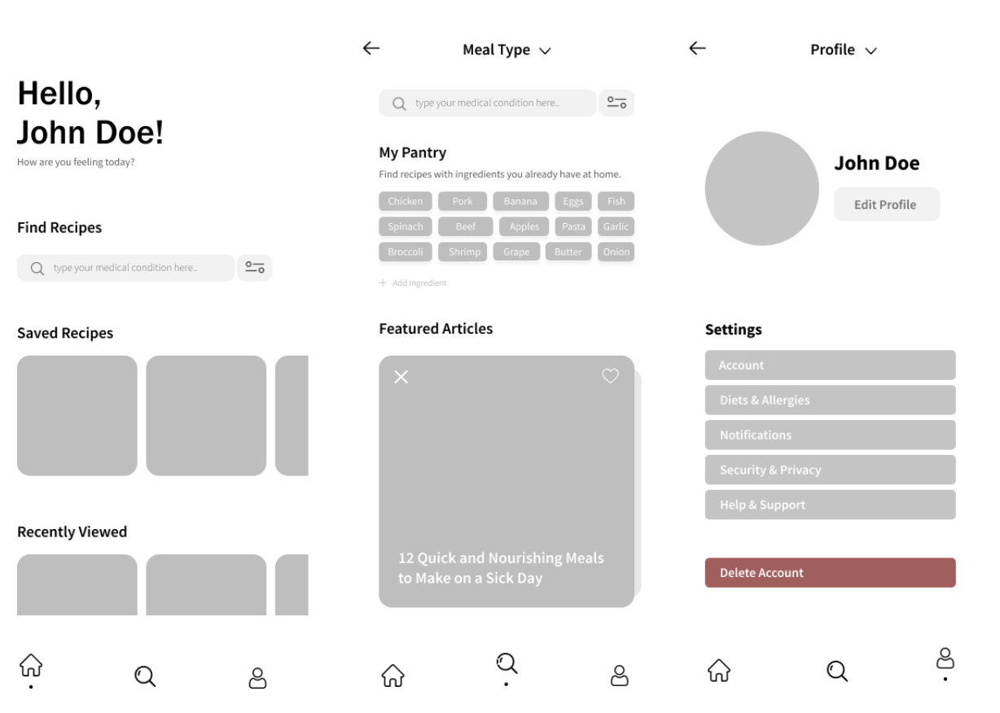
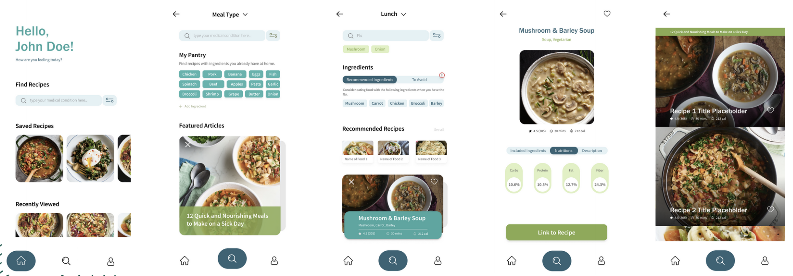

Project: Recipes for medical conditions app design
Year: 2021
Type: Group Project
Place: SFU University

This project was dedicated to coming up with the unique idea of the mobile app and make a full implementation of its’ interface design using collaborative UI tolls. That was a final group project of 3 people. And it’s fully UI/UX design as it contained the whole process of the prototype design development along with user research, different types of evaluations and usability testing resulting in refining design for improving user’s experience.
The process began with research and proposals during which we, as a team, were brainstorming on the domain selection, doing user research in it and coming up with the ideas in the selected domain. The problem encountered during this stage was to decide on the idea that everyone liked in this group. Which was solved by listening to each other and working together to improve the idea quality.
The second stage was to choose final idea and make an interaction framework focusing on specific audience containing personas and the goals which the interface is driven by. Also, we worked on system interaction modes and means of inout/output. This stage was very useful in context of user research and thinking about our system characteristics based on it.
Third stage was dedicated to visual presentation of how our interface’d work and what it’d look like. This included such methods as flow chart, interaction paths, storyboard, style guide and wireframes and first-draft screen renders. This stage was hard in terms of deciding on main features and their visual presentations which will be accessible for users. We worked on the solution by creating different layouts and using different typefaces and color palettes and choosing the best among them. During this stage we began working in Figma.
 During fourth section we began working on the first-draft interactive prototype in Framer. We implemented all the main features during this stage and were deciding on the style guide to use as well as the layout. This was one of the hardest stage as there were a lot of work in a week and we had communication issues as well as issues on deciding what suggestions of each team mate would work better. We were trying to give each other free space to talk and tried different ways of implementing things.
The fifth stage was very useful in terms of UX design methods practice as it was about testing and refining out prototype. We as a team conducted user study using survey, interviews and Think Aloud Testing. This was a hard stage in terms of coming up with right and useful questions as well as finding various users for conducting the study. We spent a lot of time preparing for interviews and together came up with set go questions that we selected from the brainstorming list.
The final stage was testing and refining the website and finishing small unworking technical and design decisions. During this stage we worked on the consistency of the whole design and testing it on different browsers.
Overall, this project was very useful in context of getting more experience in web development and UI design containing working with responsiveness and learning different coding solutions. Due to this project I became more fluent with HTML/CSS coding as well as using of Flexbox in them. And acquired more experience in terms of web development.